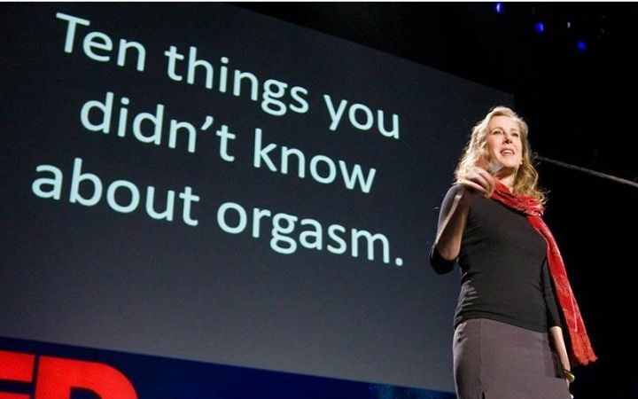

英语学习资源整理
英语四六级是所有大学生必须经历的坎；对于开发者来说学好英语尤其重要，因为很多最新的框架和技术只有英文的API让你读，此外，很多超级棒的技术网站（比如Github）也是英文的.
听力
1.电台
要说到提升听力水平大家首先想到的肯定是听广播了，一些赫赫有名的电台比如BBC、VOA等相信所有英语学习者都有所耳闻。推荐一个不错的收音软件——龙卷风收音机，电台数量可观。下面是我整理的有利于提高听力的电台。
| 电台 | 特点 | 等级 |
|---|---|---|
| BBC World Service | 耳熟能详，纯正英国腔. | 难 |
| VOA Global English | 同样大名鼎鼎，美英发音. | 难 |
| CRI News Plus | 中国国家台，强烈推荐四级听这个，因为能听懂. | 简单 |
| KQED-FM | 一个非常好的新闻类电台，美音. | 中等 |
| VOA Learning English | 正如其名，推荐. | 中等 |
需要注意的是，听英语广播要坚持下去才有效果，保证每天听一段时间；并且不要朝三暮四，认准适合自己的一到两个电台坚持听下去，熟悉它的风格和节目单。如果能做到这些，相信你的听力水平会大大提高
英语演讲
看英语演讲也是提高听力的好方法。这里我并不推荐看奥巴马、盖茨等的演讲，因为它们有时会很口语化，有时又会有嘈杂的背景音，总之听起来不是很爽。我推荐学习者去看 TED 里的演讲(如果官网速度慢可以去网易公开课观看)，专业、有趣、简短有力。
TED是一个致力于传播创意的非盈利组织。TED讲坛上云集了举世闻名的思想家、艺术家和科技专家。能够免费地观看这些精华的讲演，是我们的荣幸。在TED官网上，你可以免费下载这些视频。
Loading...